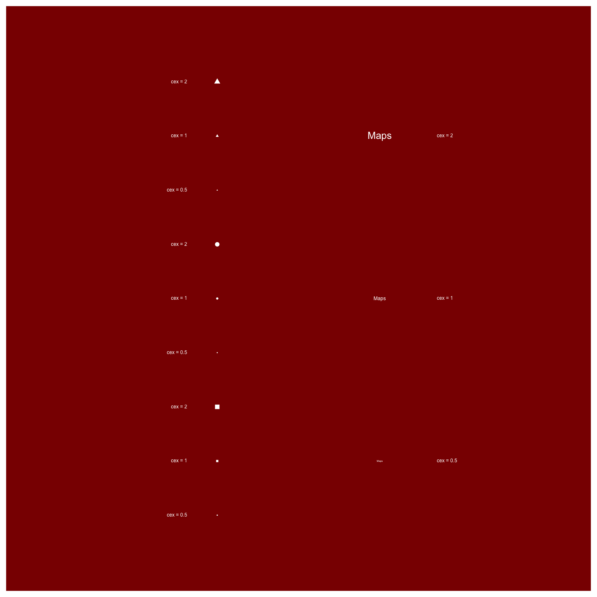

Outline
- Introduction
- The
graphicspackage basis - Composition and multi-panel plotting
- Graphics automation and exporting
- Resources
- Exercises
Kévin Cazelles and Nicolas Casajus
Université du Québec à Rimouski
graphics package basisA picture is worth a thousand words
Each element of a graph has to help understanding data
Choose the graphic that shows what you want to show


plot()boxplot(), barplot(), hist(), lines(), points(), legend(), etc.plot(x, y, ...)
points(x, y, ...)
title(main, ...)
legend(legend, ...)
ggplot2 is based on this packagegrid packagelibrary(lattice)
xyplot(y ~ x, dat, group = z,
auto.key = list(columns = 2))
grid packagelibrary(ggplot2)
p <- ggplot(data = dat,
aes(x = x, y = y, colour = z))
p <- p + geom_point(size = 3)
p
graphics packagelibrary(plotrix)
data(soils)
triax.plot(...)
graphics packageboxplot2)library(gplots)
venn(...)
graphics packagepar()par() is an object
par() is also a function
## How many graphical parameters?
length(par())
## [1] 72
## Let's get the default value of text color
par()$col
## [1] "black"
## Let's set 'red' for text color
par(col = 'red')
## Check
par()$col
## [1] "red"
## We're good!
opar <- par()par(col='red')par(opar)opar <- par()par(col = 'red')par(opar)plot(), boxplot(), barplot(), hist(), etc.plot(), boxplot(), barplot(), hist(), etc.lines(), points(), axis(), legend(), etc.You only need to know one high-level plotting function:
plot()
load('../data/xyz.RData')
head(dat)
## x y z
## 1 0.680 1.075 A
## 2 0.720 0.835 A
## 3 0.865 1.050 A
## 4 0.800 1.045 A
## 5 0.745 0.815 A
## 6 0.995 0.840 A
summary(dat$z)
## A B
## 50 50
plot(x = dat$x, y = dat$y)
bty (default: 'o')plot(x = dat$x, y = dat$y,
bty = 'n')
ann (default: 'TRUE')plot(x = dat$x, y = dat$y,
bty = 'n',
ann = FALSE)
xaxt (default: 's')plot(x = dat$x, y = dat$y,
bty = 'n',
ann = FALSE,
xaxt = 'n')
yaxt (default: 's')plot(x = dat$x, y = dat$y,
bty = 'n',
ann = FALSE,
xaxt = 'n',
yaxt = 'n')
axes=FALSE is the same as:bty='n'+xaxt='n'+yaxt='n'plot(x = dat$x, y = dat$y,
ann = FALSE,
axes = FALSE)
type (default: 'p')plot(x = dat$x, y = dat$y,
ann = FALSE,
axes = FALSE,
type = 'n')
type (default: 'p')plot(x = dat$x, y = dat$y,
ann = FALSE,
axes = FALSE,
type = 'n')
points() or axis()points()plot()## Empty plot
plot(x = dat$x, y = dat$y, ann = FALSE,
bty = 'n', type = 'n')
## Adding points (default settings)
points(x = dat$x, y = dat$y)
cex, the sizecol, the colorpch, the symbol## Empty plot
plot(x = dat$x, y = dat$y, ann = FALSE,
bty = 'n', type = 'n')
## Adding points (user settings)
points(x = dat$x, y = dat$y,
cex = 3, col = 'red', pch = 17)
col: the border color,bg: the background colorpch = 21 to 25## Empty plot
plot(x = dat$x, y = dat$y, ann = FALSE,
bty = 'n', type = 'n')
## Adding points (user settings)
points(x = dat$x, y = dat$y,
cex = 4, pch = 21,
col = 'white', bg = 'red')
points()lines()abline()segments()## Linear regression
(mod <- lm(y ~ x, data = dat))
##
## Call:
## lm(formula = y ~ x, data = dat)
##
## Coefficients:
## (Intercept) x
## 0.8246 0.1895
(a <- coefficients(mod)[1])
## (Intercept)
## 0.8246096
(b <- coefficients(mod)[2])
## x
## 0.1894751
abline()## Empty plot
plot(x = dat$x, y = dat$y, bty = 'n',
type = 'p', pch = 19)
## Adding line (default settings)
abline(reg = mod)
## Empty plot
plot(x = dat$x, y = dat$y, bty = 'n',
type = 'p', pch = 19)
## Adding line (default settings)
abline(a = a, b = b)
abline() allows to draw horizontal and vertical lines## Empty plot
plot(x = dat$x, y = dat$y, bty = 'o',
type = 'p', pch = 19)
## Adding line (default settings)
abline(h = 0.8)
abline(h = seq(0.9, 1.2, by = 0.1))
abline(v = seq(0.6, 1.4, by = 0.2))
lines() and points()## New data frame
mat <- data.frame(x = seq(0.6, 1.4, by = 0.05))
## Model prediction
ypred <- predict(object = mod, newdata = mat)
lines() and points()## Empty plot
plot(x = dat$x, y = dat$y, bty = 'n',
type = 'p', pch = 19)
## Adding line (default settings)
lines(x = mat$x, y = ypred)
## Or, with the function points()
points(x = mat$x, y = ypred, type = 'l')
lwd, the line widthcol, the line colorlty, the line type## Empty plot
plot(x = dat$x, y = dat$y, bty = 'n',
type = 'p', pch = 19)
## Adding line (user settings)
lines(x = mat$x, y = ypred,
col = 'red', lwd = 4, lty = 2)
polygon()rect()## Model prediction with se
ypred <- predict(object = mod, newdata = mat,
se.fit = TRUE)
class(ypred)
## [1] "list"
names(ypred)[1:2]
## [1] "fit" "se.fit"
polygon()## Superior interval
xsup <- mat[ , 'x']
ysup <- ypred$fit + ypred$se.fit
## Inferior interval
xinf <- mat[ , 'x']
yinf <- ypred$fit - ypred$se.fit
## Reverse sort of inf.
xinf <- mat[nrow(mat) : 1, 'x']
yinf <- yinf[length(yinf) : 1]
## Empty plot
plot(x = dat$x, y = dat$y, bty = 'n',
type = 'p', pch = 19)
## Adding error envelope
polygons(x = c(xsup, xinf), y = c(ysup, yinf))
border, the border colorcol, the background colorlwd, the border width## Empty plot
plot(x = dat$x, y = dat$y, bty = 'n',
type = 'p', pch = 19)
## Adding error envelope
polygon(x = c(xsup, xinf), y = c(ysup, yinf),
col = 'orange', border = 'red',
lwd = 4)
## Empty plot
plot(x = dat$x, y = dat$y, bty = 'n',
type = 'p', pch = 19)
## Adding error envelope
polygon(x = c(xsup, xinf), y = c(ysup, yinf),
col = '#aaaaaa88', border = '#aaaaaa88')
## Adding model regression
lines(x = mat$x, y = ypred$fit, lwd = 3)
rect() is appropiated when you want to add draw rectangleplot(x = dat$x, y = dat$y, bty = 'n',
type = 'p', pch = 19)
rect(xleft = 0.9, ybottom = 0.8,
xright = 1.1, ytop = 1.2,
density = 20, angle = 45)
plot(x = dat$x, y = dat$y, bty = 'n',
type = 'p', pch = 19)
rect(xleft = 0.9, ybottom = 0.8,
xright = 1.1, ytop = 1.2,
col = 'yellow', border = 'red',
lwd = 4, lty = 3)
title()## Basic plot
plot(x = dat$x, y = dat$y, bty = 'n',
type = 'p', pch = 19)
## Adding title
title(main = 'Figure title')
text()## Basic plot
plot(x = dat$x, y = dat$y, bty = 'n',
type = 'p', pch = 19)
## Adding text
text(x = 0.7, y = 1.19,
labels = 'Figure title')
## Empty plot
plot(x = dat$x, y = dat$y, bty = 'n', type = 'n')
## Adding text
text(x = dat$x, y = dat$y, labels = dat$z)
cex, the sizecol, the colorfont, the font (bold, italic, etc.)family, the typeface## Basic plot
plot(x = dat$x, y = dat$y, bty = 'n',
type = 'n')
## Adding text
text(x = 1, y = 1, labels = 'My text', col = 'red',
cex = 2, font = 2, family = 'mono')
srt, the rotation anglepos, the position from coordinates## Basic plot
plot(x = dat$x, y = dat$y, bty = 'n',
type = 'n')
## Adding text
text(x = 0.6, y = 0.85, labels = 'pos = 4 (right)',
cex = 2, font = 1, pos = 4)
text(x = 1, y = 1, labels = 'Rotated text',
cex = 2, font = 2, srt = 45)
text() can't add text outside the plot areapar(xpd=TRUE)mtext()## Basic plot
plot(x = dat$x, y = dat$y, bty = 'n',
type = 'p', pch = 19, ylab = '')
## Adding text
mtext(text = 'y-axis', side = 2, line = 2,
at = 1.15, font = 2, cex = 2)
## Basic colors
palette()
## [1] "black" "red" "green3" "blue" "cyan" "magenta" "yellow"
## [8] "gray"
## and 657 others colors
colors()[1:10]
## [1] "white" "aliceblue" "antiquewhite" "antiquewhite1"
## [5] "antiquewhite2" "antiquewhite3" "antiquewhite4" "aquamarine"
## [9] "aquamarine1" "aquamarine2"
rgb()red <- rgb(red = 1, green = 0, blue = 0)
yellow <- rgb(red = 1, green = 1, blue = 0)
gray1 <- rgb(red = 0.5, green = 0.5, blue = 0.5)
rgb()red <- rgb(red = 1, green = 0, blue = 0)
yellow <- rgb(red = 1, green = 1, blue = 0)
gray1 <- rgb(red = 0.5, green = 0.5, blue = 0.5)
alpha argument controls for opacity (default = 1)## Transparent red
redp <- rgb(red = 1, green = 0, blue = 0,
alpha = .8)
## Empty plot
plot(x = dat$x, y = dat$y, ann = FALSE,
bty = 'n', type = 'n')
## Transparent red
redp <- rgb(red = 1, green = 0, blue = 0,
alpha = .5)
## Adding points
points(x = dat$x, y = dat$y, col = redp,
pch = 19, cex = 4)
red <- '#FF0000'
yellow <- '#FFFF00'
gray1 <- '#888888'
red <- '#FF0000'
yellow <- '#FFFF00'
gray1 <- '#888888'
## Transparent red
redp <- '#FF000088'
axis() allows to add axis## Empty plot
plot(x = dat$x, y = dat$y, pch = 19)
## Adding top-axis
axis(side = 3, at = seq(0.6, 1.4, by = 0.1),
labels = seq(0.6, 1.4, by = 0.1), las = 1)
## Adding right-axis
axis(side = 4, at = seq(0.8, 1.2, by = 0.1),
labels = format(seq(0.8, 1.2, by = 0.1)),
las = 2)
mar in the par()par(mar = c(4, 4, 4, 4))
iris.txt (Dropbox)head(tab)
## Error in head(tab): objet 'tab' introuvable
nmfrow and mfcol in par()par(mfrow=c(2,2))
or
par(mfcol=c(2,2))
mfrow and mfcol in par()split.screen()split.screen(c(1, 2))
split.screen(c(3, 1), screen = 2)
par()split.screen()mat_lay <- matrix(c(1,2,4,1,3,4),nrow=3)
layout(mat_lay)
mat_lay <- matrix(c(1,2,4,1,3,4), nrow=3)
layout(mat_lay)
## [,1] [,2]
## [1,] 1 1
## [2,] 2 3
## [3,] 4 4
mat_lay <- matrix(c(0,2,2,1,3,3,1,4,0), nrow=3)
layout(mat_lay)
## [,1] [,2] [,3]
## [1,] 0 1 1
## [2,] 2 3 4
## [3,] 2 3 0
mat_lay <- matrix(c(0,2,2,1,3,3,1,4,0),nrow=3)
layout(mat_lay, widths=c(.25,1,1))
mat_lay <- matrix(c(0,2,2,1,3,3,1,4,0),nrow=3)
layout(mat_lay, widths=c(.25,1,1),
heights=c(.25,1,.25))
mat_lay <- matrix(c(0,2,2,1,3,3,1,4,0),nrow=3)
layout(mat_lay, widths=c(.25,1,1),
heights=c(.2,1,.4))
for (i in 1:4) {
if (i<3) par(mar=rep(1,4)) else par(mar=rep(4,4))
eplot()
fillIt(col=i)
text(0,0, labels=i, cex=4)
}
new=TRUE and specifying fig in par(): plot(...)
new=TRUE and specifying fig in par():par(); plot(...)
par(new=TRUE, fig=c(0.5,1,0.5,1))
new=TRUE and specifying fig in par():par();add your embedded plot;
plot(...)
par(new=TRUE, fig=c(0.5,1,0.5,1))
plot(...)

options('device')
bmp(), jpeg(), png(), tiff()?jpeg
png(filename, width=480, height=480)
...
dev.off()

png(filename, width=1440, height=1440)
...
dev.off()

width=480 + height=480 = grid of 480x480px ;pointsize of plotted text = how many points your font will use (size of the text);res (in px per inch, ppi) links pixel and size;res determines how many pixels = 1pt;res=72 then one point will equal exactly one pixel.res=72 + width=480 + height=480 = 6.667x6.667in => 16.9*16.9cmres=300 + width=480 + height=480 = 1.6x1.6in => 4.06cmx4.06cmjpeg(filename, res=72,
pointsize=12, width=480, height=480)
...
dev.off()


png(filename, res=144)
...
dev.off()

png(filename, res=144,
height=7, width=7, unit="in")
...
dev.off()
png(filename, res=288,
height=7, width=7, unit="in")
...
dev.off()

png(filename, res=288,
height=7, width=7, unit="in")
...
dev.off()

png(filename, res=288,
height=2*7, width=7, unit="in")
...
dev.off()

pdf(fil, pointsize=12,
height=2*7, width=7)
...
dev.off()
svg(filename, pointsize=12,
height=2*7, width=7)
...
dev.off()

Reproduce the figure depicting distribution of english letters made by David Taylor :